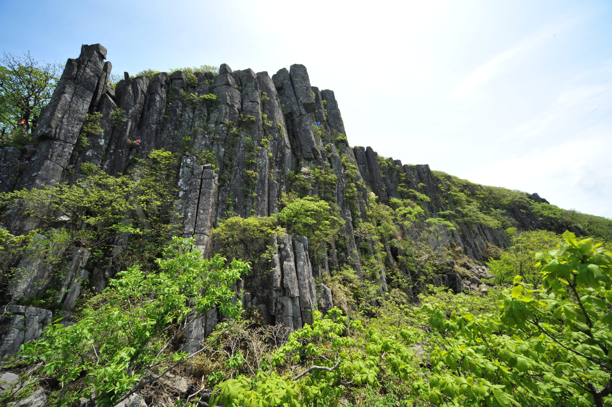
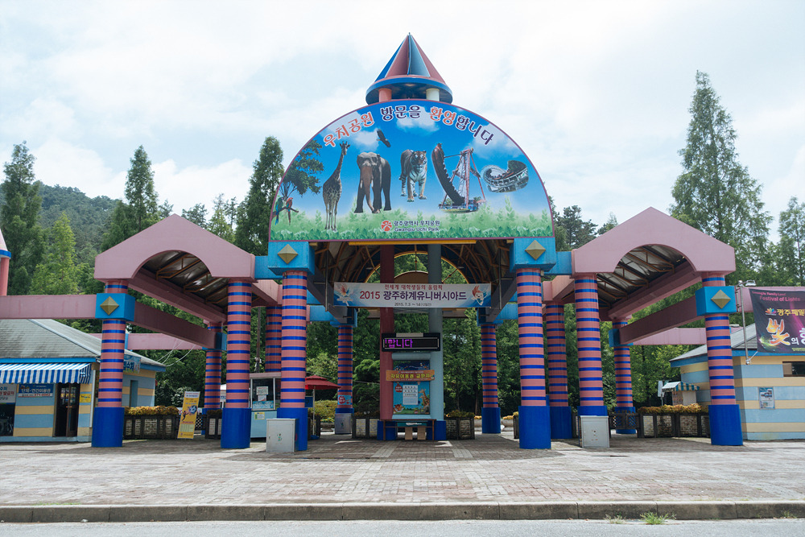
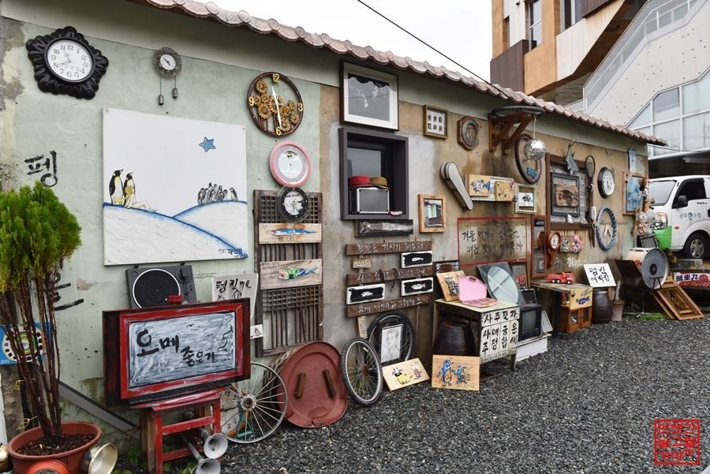

"1913 송정역 시장"
송정역시장은 전통시장의 특색을 강화하며, 특색있는 가게도 많고, 천원짜리 잔치국수도 맛볼 수 있는 등 다른 시장과는 차별화를 둔 시장이다. 이곳의 진면목은 밤에 나타나는데, 광주 여행을 왔다면 이 곳에서 야식을 먹으며 피로를 푸는 것도 좋다.
오시는 길
광주 광산구 송정로8번길 13

"무등산"
광주광역시 담양군, 화순군에 걸쳐 우뚝 솟아있는 무등산은 광주의 진산으로, 광주의 옛 이름인 무진주(武珍州)등 다양한 이름으로 불렸다. 봄에는 진달래, 여름에는 참나리, 가을에는 단풍과 억새, 겨울에는 설경 등 사계절 내내 다양한 매력을 자랑하며 높낮이가 완만하고 산지가 부드러운 곡선의 형태라 누구나 오를 수 있는 편안한 산이다.
오시는 길
광주 북구 금곡동

"우치공원"
1991년에 개원한 우치공원은 놀이공원과 동물원으로 나누어진다. 놀이공원은 광주패밀리랜드라고 불리고 호남지역에서 꽤 큰 테마파크이다. 동물원은 무료로 볼 수 있고 규모가 큰 편은 아니지만 코끼리, 기린, 하마 등 다양한 동물들을 볼 수 있다. 사람이 많은 편은 아니기 때문에 아이들과 함꼐 즐거운 시간을 보낼 수 있다.
오시는 길
광주 북구 우치로 677 우치공원

"펭귄마을"
전남 광주 양림동은 과거로 떠나는 타임머신 여행지다. 광주 근현대사 여행지로 인기가 높은 이곳엔 옛 추억을 불러일으키는 또 다른 시간 여행지가 있다. 펭귄마을에는 펭귄은 살지 않지만 그보다 더 눈길을 끄는 볼거리들이 가득하고, 시간여행 속 색다른 여행지로 떠오르는 곳이다.
오시는 길
광주 남구 천변좌로446번길 7